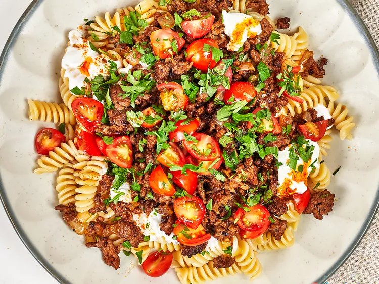

Turkish Pasta

Description
This Turkish pasta recipe features a sweet paprika yogurt sauce, ground
round, and fusilli pasta.
Ingredients
- 2 cups strained Greek yogurt
- 3 cloves garlic, finely minced
- 2 teaspoons kosher salt, divided, plus more to taste
- 5 tablespoons butter
- 2 teaspoons sweet paprika, divided
- 1 pound fusilli pasta
- 1 1/4 pounds ground round
- 1 cup chopped onion
- 1/4 teaspoon curry powder
- 2 teaspoons onion powder
- 1/2 teaspoon freshly ground black pepper
- 1 pint grape tomatoes, quartered
- 1 bunch flat leaf parsley, roughly chopped
Steps
-
Stir together yogurt, garlic and 1/2 teaspoon salt in a bowl until well
blended and set aside. Melt butter in a small skillet or saucepan and
stir in 1/2 teaspoon paprika and salt to taste. Keep warm.
-
Bring a large pot of salted water to a boil. Add pasta and cook until al
dente, about 9 minutes; drain.
-
Meanwhile, heat a large skillet over medium-high heat. Add ground beef
and cook, breaking up meat with a spatula, until beginning to brown. Add
onion, remaining paprika, curry powder, onion powder, remaining salt,
and pepper and cook until browned, crumbly, and slightly crispy.
-
Divide pasta among serving plates and top evenly with yogurt mixture.
Top with ground beef mixture and drizzle evenly with butter mixture.
Sprinkle the top with tomatoes and parsley.